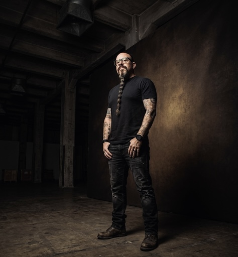

One Hub to Rule Them All
A collection of resources from around the interwebs for UX builders, designers, specialists and tinkerers. Like a cat bringing a dead bird to your bed: less mess, same sentiment.
Dan NemirovskyCurating what's worth keeping for design, UX and AI work.
LinkedIn (opens in a new tab)Top of mind right now.
A handful of resources, swapped in and out as what's useful changes. Everything else is in the archive below.
Everything kept, organized and filterable.
Every link, download, explainer and video in one place. Filter by format or topic; every filtered view is a link you can share.
Showing — of —
Nothing here for that combination yet. Try another format or topic.
Four formats, tagged by topic.
Every resource is one of four formats and carries one or more topic tags — that's the whole taxonomy. Simple on purpose: this is a personal archive first, a shareable one second.
Link
A page, tool, or site worth going back to.
Download
A file worth keeping local — template, kit, PDF.
Explainer
A write-up, method, or framework worth citing.
Video
A talk, demo, or walkthrough worth watching.
Human-centered. Always.

I'm a designer, strategist, and product thinker with 20+ years building teams and products across finance, healthcare, tech, big data, and automotive — in startups, in corporate environments, and on my own. Products I shipped at Prudential Financial and Northwell Health are still running, and still winning awards.
My approach is human-centered and data-informed: design that gets tested, iterated, tested again, and still keeps a spark of soul. I'm most useful when the problem is messy — merging design and engineering cultures, modernizing legacy systems, or helping a team remember what it feels like to make something people love.
Tools I reach for
Outside the work
Coffee. Obviously.
Every good idea starts with a cup. Every great idea starts with two.
Photography & Video
If it can be framed, I'm already thinking about the shot — documentary-style, natural light, no exceptions.
Hudson Valley Explorer
Trails, farms, small towns, mountain views. It keeps showing up in the work. Hard not to be inspired.
Obsessive Type Nerd
Yes, I notice bad kerning in restaurant menus. No, I cannot be stopped.
AI-Augmented, Not AI-Dependent
Integrated into every stage of the workflow. The strategy, craft, and decisions are still human — the speed isn't.
Still Excited After 20 Years
The problems keep changing. The satisfaction of solving them hasn't. That's the whole reason to keep doing this.